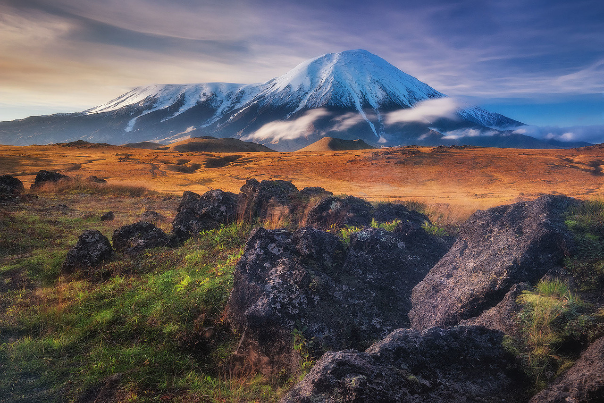
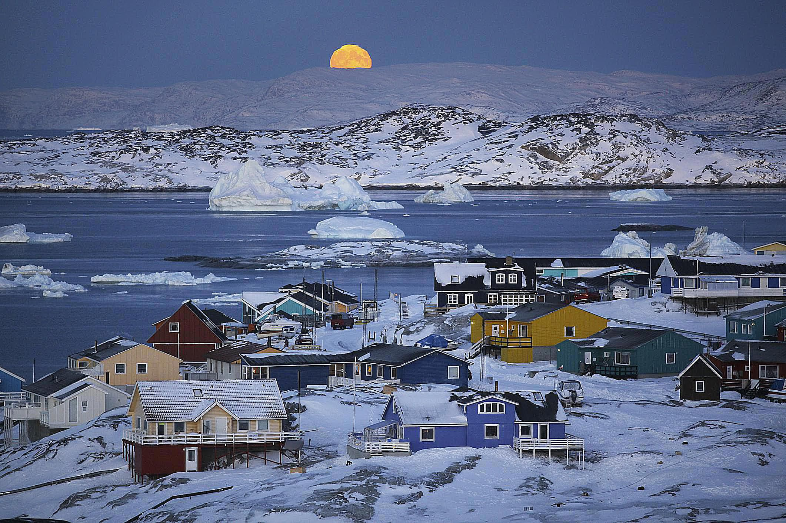

Your adventure starts here. Discover breathtaking destinations and create unforgettable memories.
Explore unexplored and unique places throughout the world
At Infinite Adventure, we believe that travel is more than just a journey—it's an exploration of the extraordinary. From the serene beaches of Bali to the rugged landscapes of Patagonia, we curate unforgettable experiences that take you beyond the ordinary. Whether you're a thrill-seeker craving the next adrenaline rush or a culture enthusiast eager to dive into new traditions, we have something for every kind of adventurer.
Why Choose Infinite Adventure?With years of experience in the travel industry, our team of experts crafts personalized itineraries that cater to your unique preferences and needs. We partner with local guides and communities to ensure you experience the authentic essence of each destination.
Sustainable TravelWe are committed to responsible tourism that respects the environment and local cultures. Our eco-friendly travel options allow you to explore the world while leaving a minimal footprint, ensuring that future generations can enjoy these wonders too.
Unforgettable ExperiencesFrom hot air balloon rides over Cappadocia to diving with the vibrant marine life of the Great Barrier Reef, our adventures are designed to create memories that last a lifetime. We take care of every detail, so all you have to do is embrace the moment.
Your Next Adventure AwaitsWhether you're planning a solo backpacking trip, a romantic getaway, or a family vacation, Infinite Adventure is your gateway to the world’s most breathtaking destinations. Browse our travel packages, get inspired by our travel blog, or connect with our travel experts to start planning your next adventure.
Book Your Dream VacationReady to turn your travel dreams into reality? Explore our destinations, book your tickets, and let Infinite Adventure guide you to the trip of a lifetime.
Join Our CommunityAt Infinite Adventure, we believe in the power of community. Join fellow explorers from around the globe, share your stories, and inspire others to embark on their own journeys. Follow us on social media and subscribe to our newsletter for the latest travel tips, exclusive offers, and updates on new destinations.
Immerse yourself in the beauty and culture of destinations around the world. From iconic landmarks to hidden gems, explore the places that make our planet extraordinary.
The Kamchatka Peninsula in Northeast Siberia, Russia, is one of the least explored places in the world. The peninsula is a region of geological wonders, with volcanoes (some of which are pretty active), bays, geysers, and many more.
The region is also home to diverse wildlife, including a wide range of salmon species and brown bears. In fact, it is considered to have the densest population of brown bears in the world. Being a very remote and difficult-to-explore region, this peninsula is still largely unexplored, and only 400,000 people live on it, which is a pretty small number for such a huge area.
Why it's Special:Stunning natural features like volcanoes and geysers, plus plenty of wildlife
Location: Eastern Russia

Greenland, considered the largest island on the planet, is still largely undiscovered and is one of the least explored countries on Earth. The interior of Greenland is majorly inaccessible and unusable because of an enormous ice sheet that covers roughly 80% of the island and is incredibly thick (miles thick) at certain places.
Still, although under-explored, there's plenty to do and see in Greenland; it is no surprise that a vast region covered in white has a plethora of natural wonders, including hot springs, ice-covered rivers, gemstones, the Northern Lights, and many others that entice travelers to this ice wonderland.
However, there is still a considerable unexplored area on the Greenland Ice Sheet, making it one of the least explored spots on Earth.
Why it's Special:It's the largest and least explored island on Earth
Location:North America

We're here to help you plan your next adventure. Get in touch with us for personalized travel advice, booking assistance, and more.
Travel Agencies associated with us :